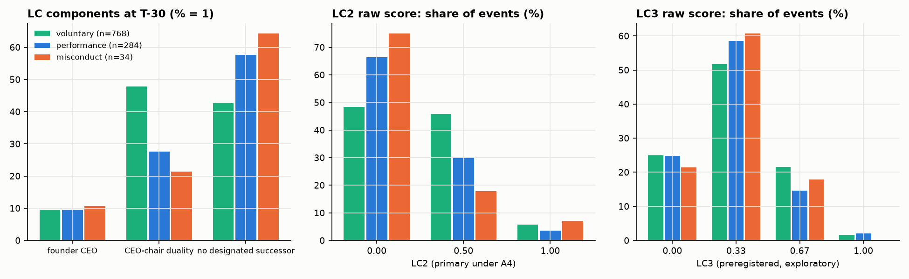
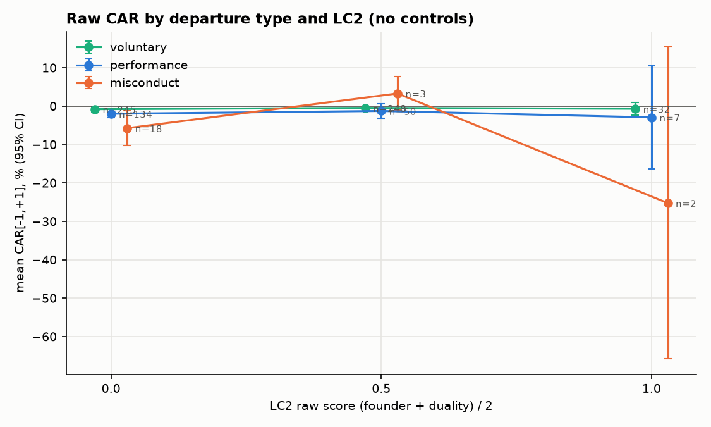
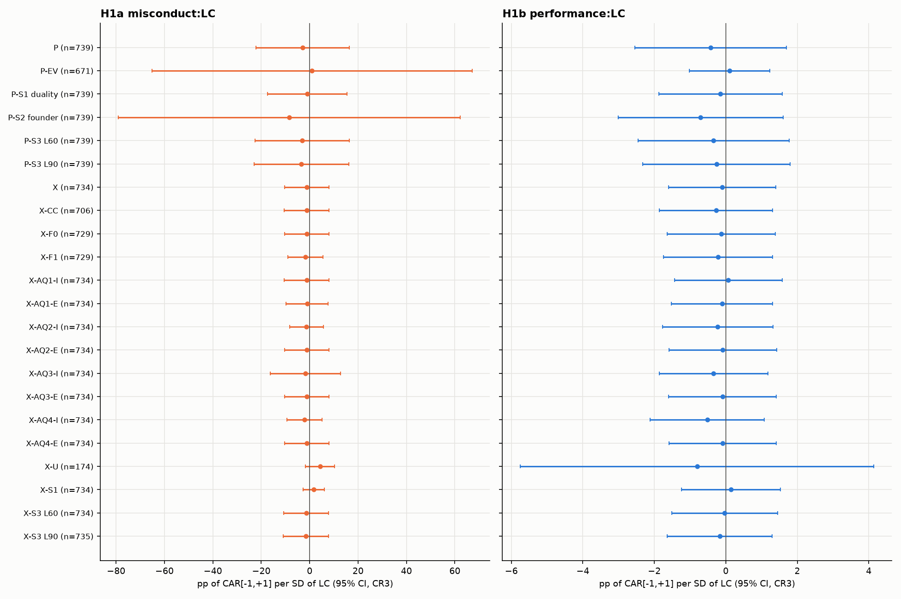
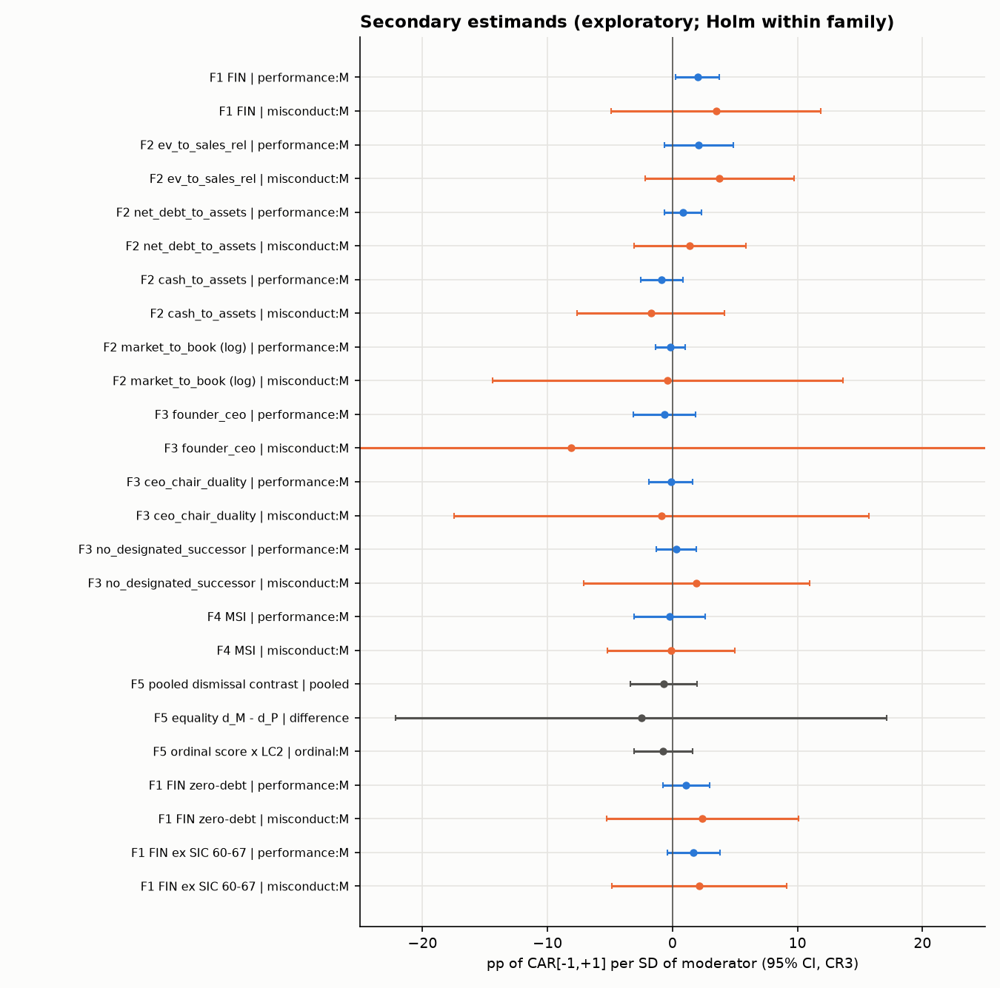

Does concentrated leadership amplify the market's reaction to CEO departures?
I tested this on 739 CEO departures at US listed firms. I found no detectable effect. For performance-related dismissals the evidence rules out all but small effects. For misconduct-related departures there are too few cases to say anything either way.
The question
This study is part of a project on NVIDIA's share decline in October–November 2026, during which leadership news was one of several things moving the stock. A natural idea is that markets react more strongly to leadership news when a company depends heavily on one person. Before relying on that idea, I checked whether it holds across many past CEO departures.
I call the dependence on one person leadership concentration (LC). My main measure counts two signals in the company's filings: the CEO is a founder, and the CEO is also chair of the board. LC is 0, ½ or 1, then standardised.
I tested two preregistered hypotheses, each against voluntary departures (retirements and planned exits) as the baseline:
- H1a: when a CEO leaves over misconduct, the share price falls more at high-LC firms.
- H1b: when a CEO is dismissed for poor performance, replacing them helps high-LC firms less.
Where the data come from
All inputs are public and were downloaded automatically by the project's scripts on 13–14 November 2026. Each download is logged with its date and a SHA-256 checksum.
| Data | Source and download route | What I used it for | Coverage |
|---|---|---|---|
| CEO departures | Gentry et al. CEO Dismissal Database, archival version of 26 Nov 2025, downloaded as an Excel file from Zenodo: zenodo.org/records/23328926 (CC BY 4.0) | The list of departures and their type: voluntary, performance or misconduct | S&P 1500 firms; I used 2005–2025 |
| Filing index and announcement 8-Ks | SEC EDGAR submissions API (data.sec.gov/submissions) and EDGAR archive (sec.gov/Archives), fetched with a rate limit of about 8 requests per second | Exact announcement dates (8-K Item 5.02) and earnings releases (Item 2.02) | 2004–2026 |
| Proxy statements and 10-Ks | EDGAR archive: the latest DEF 14A, or 10-K if there is none, accepted before the cut-off | Founder status, CEO-chair duality and executive titles | One document per event |
| Company–ticker map | SEC sec.gov/files/company_tickers.json | Linking firms to stock tickers; remapping 8 subsidiary filers to their listed parents | Current listings |
| Financial statements | SEC XBRL API (data.sec.gov/api/xbrl/companyconcept), one request per firm and item | Sales, assets, cash, debt, equity and shares outstanding (financial-vulnerability check) | 2009 on |
| Stock prices | Yahoo Finance through the open-source yfinance Python library | Daily closing prices, volume and splits for 775 tickers and SPY (S&P 500 ETF) | 1993–2026 |
| Market stress inputs | VIX from Yahoo Finance (^VIX); BAA–10-year credit spread (BAA10Y) and the St. Louis Fed Financial Stress Index (STLFSI4) from FRED/ALFRED (fred.stlouisfed.org), with historical vintages | Market stress index, and checking it against the Fed's index | 1994–2025 |
| Trading calendar | The exchange_calendars Python library (NYSE, XNYS) | Counting trading sessions for every window | All dates |
| Successor field (coded, not downloaded) | Claude AI agents read each proxy statement under a fixed codebook; a second model re-coded a random 10% and all flagged cases | Whether another executive held a President or COO title (exploratory three-part measure only) | 1,127 documents |
From the database to the 739 events I analyse
Each step below removes events for a stated reason. The rules were fixed before any returns were computed.
- No price data (577 lost). Most of these firms no longer trade under a current ticker. Recovering them would need licensed data (CRSP), which I did not have. The sample therefore leans toward firms that survived.
- Earnings on the same days (239 lost). When a departure is announced together with results, the price reaction mixes both pieces of news.
- No usable filing (108 lost). No proxy or 10-K before the cut-off, or the CEO's title could not be found in it.
Measuring leadership concentration
For each departure I read the company's last proxy statement (or 10-K) filed at least 30 trading days before the announcement, so the measure cannot reflect the departure news itself. A rule-based text extractor finds the CEO's title (is the CEO also chair?) and biography (did the CEO found the company?).
I checked the extractor against hand-coded samples: founder status was right 92% of the time and duality 96%. The coders were AI models, not people, so this is not human validation. A third signal, whether a designated successor exists, could not be extracted reliably (81% accuracy against a 90% bar). It was coded by AI agents and enters only an exploratory three-part version of the measure.

Leadership concentration by departure type, for all 1,086 price-matched departures (the sample before the earnings and filing exclusions). CEO-chair duality is most common in voluntary departures. Among the 23 misconduct cases in the final sample, only 2 have the highest LC2 score.
- T−30
- The cut-off: 30 trading sessions before the trading day before the announcement. Only filings accepted before it are read, so the measure predates the news.
- founder CEO
- 1 if the filing describes the departing CEO as a founder or co-founder of the company, else 0.
- CEO-chair duality
- 1 if the CEO also holds the title chair (or chairman) of the board, else 0.
- no designated successor
- 1 if no executive other than the CEO holds a company-level President or Chief Operating Officer title, else 0 (AI-coded; used only in LC3).
- % = 1
- Left panel: share of departures of each type for which the flag equals 1.
- LC2 raw score
- Mean of founder CEO and CEO-chair duality: 0, 0.5 or 1. The main measure; standardised (z-score) in the regressions.
- LC3 raw score
- Mean of all three flags: 0, 0.33, 0.67 or 1. The originally planned measure, now exploratory.
- share of events (%)
- Middle and right panels: percentage of each type's departures at each score value.
- n
- Number of departures of each type, in the legend.
- voluntary / performance / misconduct (colours)
- Departure type from the Gentry et al. database: voluntary = retirement or planned exit (codes 5–6, green); performance = dismissed for poor performance (code 3, blue); misconduct = left over legal or ethical issues (code 4, orange).
Measuring the market reaction
The outcome is the abnormal return over three trading days around the announcement (day −1 to day +1), written CAR[−1,+1]. It is the stock's return minus what the stock would normally have done, given the market (SPY) and its industry that day.
"Normal" behaviour is estimated for each stock from roughly one year of prices ending six weeks before the event. I picked this model from four candidates by testing them on 5,000 random dates with no event before 2015. The chosen model flagged 4.7% of those dates as unusual at the 5% level, close to what it should.
Average three-day reactions: voluntary −0.6%, performance −1.8%, misconduct −6.2%.
How the hypotheses were tested
I regressed each departure's abnormal return on its type, its leadership concentration and their interaction. Controls: the stock's normal volatility, firm size, the prior two-month return, CEO tenure, whether the exit was planned, whether a successor was named, industry and calendar month. H1a and H1b are the two interaction terms.
Safeguard. All returns were computed and then sealed with checksums. I did not look at them until the full test, its power and its decision rules were frozen.
One change, made before seeing outcomes. I simulated outcomes with no true effect. The preregistered standard errors flagged a false H1a effect about 20% of the time instead of 5%, because only a handful of misconduct cases drive that term. I switched to a more robust jackknife version (CR3), which was close to 5% in the same simulation.

How large an effect the test could detect. The curves come from simulated outcomes built on the real sample (types, months, LC values, controls and each stock's own volatility) with a known effect added. With 23 misconduct cases, H1a needs an effect of about 6–12 pp per SD to be found 80% of the time; H1b about 1.6–3.2.
- true effect
- Horizontal axis: the effect size built into the simulated outcomes, in pp of CAR[−1,+1] per SD of LC, in the predicted (negative) direction.
- power
- Vertical axis: share of 2,000 simulations in which the test rejects with a negative estimate, at the first-step Holm threshold (alpha 0.025).
- 80% line
- The usual target power. Where a curve crosses it is the minimum detectable effect (MDE).
- LC2 (blue), LC3 (orange)
- The main and the exploratory leadership measure (see the figure in section 4).
- variance ×1.00 / ×2.25 / ×4.00 (solid, dashed, dotted)
- Assumed announcement-day noise relative to normal-day noise. Announcement days are usually noisier, so larger multipliers are more realistic; ×2.25 is the main assumption.
- H1a misconduct:LC, H1b performance:LC
- The two tested interaction terms; n = departures of that type with LC2.
- CAR[−1,+1]
- Cumulative abnormal return: the stock's return over the trading day before, the day of and the day after the announcement, minus the return its normal-return model predicts from the market (SPY) and its industry. Log points, shown in percent.
Table A1 at the end of the page lists the numbers.
What I found
H1a · misconduct
inconclusiveThe interval covers large drops, no effect and large gains. Too few cases to tell. This is not evidence of no effect.
H1b · performance
inconclusiveClose to zero. Effects larger than about 2.5 points per standard deviation are effectively ruled out.
Each estimate is the extra three-day abnormal return per standard deviation of leadership concentration, relative to voluntary departures, in percentage points. Both p-values are 1.00 after the Holm correction for two tests.

The main estimate and its preregistered variations. Every point is slightly negative and every interval includes zero, so both hypotheses are inconclusive.
- P (primary, CR3)
- The main specification: LC2 measured at T−30, event-month fixed effects, 739 departures.
- lc_ex_founder
- Same, with CEO-chair duality alone as the measure (founder flag dropped).
- lag_60, lag_90
- LC2 read from filings accepted before 60 or 90 trading sessions ahead of the event, instead of 30.
- quarter_fe_plus_msi
- Calendar-quarter instead of month fixed effects, plus the market stress index (MSI) and its interaction with departure type.
- common_support_subset
- Drops LC2 values with fewer than 2 departures of some type (nothing was dropped here).
- X LC3 (exploratory)
- The originally planned three-flag measure, including the AI-coded successor flag.
- −MDE (dashed line)
- Minus the minimum detectable effect: 8.67 pp (H1a) and 2.43 pp (H1b). If a whole interval lies to its right, the hypothesis is rated not supported.
- inconclusive (title)
- The frozen verdict: neither supported (negative and significant after Holm correction) nor ruled out.
- pp per SD of LC
- Percentage points of CAR[−1,+1] for a one-standard-deviation increase in leadership concentration. Negative = a larger price drop at more concentrated firms.
- 95% CI, CR3
- Horizontal bars are 95% confidence intervals from jackknife (CR3) standard errors clustered by event month, the test that decides the verdicts.
- misconduct:LC, performance:LC
- The interaction terms that test H1a and H1b: how much more the reaction to a misconduct or performance departure changes with LC than the reaction to a voluntary departure does.

Raw averages, before any controls. The two misconduct cases at the highest score average about −25%, but two cases cannot carry a conclusion.
- LC2 raw score
- Horizontal axis: (founder CEO + CEO-chair duality) / 2, so 0, 0.5 or 1. Points are offset slightly so they do not overlap.
- mean CAR[−1,+1], %
- Vertical axis: average three-day abnormal return of the departures at that score.
- error bars
- 95% confidence interval of the mean (±1.96 standard errors).
- n
- Number of departures behind each point.
- CAR[−1,+1]
- Cumulative abnormal return: the stock's return over the trading day before, the day of and the day after the announcement, minus the return its normal-return model predicts from the market (SPY) and its industry. Log points, shown in percent.
- voluntary / performance / misconduct (colours)
- Departure type from the Gentry et al. database: voluntary = retirement or planned exit (codes 5–6, green); performance = dismissed for poor performance (code 3, blue); misconduct = left over legal or ethical issues (code 4, orange).
Do the results hold up?
I repeated the test with every variation listed in advance: different ways of coding the successor field, dropping uncertain cases, other measurement dates, and each signal on its own. I also tested whether financial weakness or market-wide stress plays the role leadership concentration was supposed to.

Every variation agrees: the performance estimate stays near zero, and the misconduct estimate is never precise enough to interpret. Rows starting with P use LC2; rows starting with X use the exploratory LC3.
- n
- Departures used in that row.
- pp per SD of LC
- Percentage points of CAR[−1,+1] for a one-standard-deviation increase in leadership concentration. Negative = a larger price drop at more concentrated firms.
- 95% CI, CR3
- Horizontal bars are 95% confidence intervals from jackknife (CR3) standard errors clustered by event month, the test that decides the verdicts.
- misconduct:LC, performance:LC
- The interaction terms that test H1a and H1b: how much more the reaction to a misconduct or performance departure changes with LC than the reaction to a voluntary departure does.
Table A2 at the end of the page lists the numbers.

Secondary tests, each with its own moderator in place of LC. One of 21 crosses the significance line: financially weaker firms reacted less negatively to performance dismissals (+2.0 points), the opposite of amplification. It disappears in the two sensitivity rows at the bottom, so I treat it as noise until shown otherwise. Families F1–F5 are each corrected for multiple tests separately (Holm).
- M
- The moderator named in the row. misconduct:M and performance:M are its interactions with departure type, read like misconduct:LC and performance:LC.
- colours
- Orange = misconduct term, blue = performance term, grey = combined contrasts.
- horizontal axis
- pp of CAR[−1,+1] per SD of the moderator, with 95% CR3 intervals. The axis is cut at ±25, so very wide intervals run off the edge.
- CAR[−1,+1]
- Cumulative abnormal return: the stock's return over the trading day before, the day of and the day after the announcement, minus the return its normal-return model predicts from the market (SPY) and its industry. Log points, shown in percent.
Table A3 at the end of the page lists the numbers.
What to keep in mind
- Few misconduct cases. 23 in total, about 17 informative. The misconduct question stays open.
- Survivor bias. 577 departures could not be priced, mostly at firms no longer listed.
- Machine-coded measures. Founder and duality come from a text extractor checked against AI coders, not human ones. An AI audit found about 30 missed duality flags among 48 flagged cases. The main measure also replaces the originally planned three-part measure (a disclosed change).
- Departure types come from media coverage. On announcement-day filings alone, only 19 of 53 misconduct cases read as misconduct.
- Earnings overlap. 22% of departures were dropped because results came out the same days, and they may differ from the rest.
Tables behind the figures
Table A1 · minimum detectable effects (power figure, section 6)
Minimum detectable effect at 80% power (pp of CAR[−1,+1] per SD of LC; CR3 test, Holm first step α = 0.025)
| Term and measure | noise ×1 | noise ×2.25 (main) | noise ×4 |
|---|---|---|---|
| H1a misconduct, LC2 (main) | 6.0 | 8.7 | 12.0 |
| H1b performance, LC2 (main) | 1.6 | 2.4 | 3.2 |
| H1a misconduct, LC3 (exploratory) | 5.1 | 7.8 | 10.4 |
| H1b performance, LC3 (exploratory) | 1.3 | 2.0 | 2.6 |
Read: with the main noise assumption, the test finds a misconduct effect 80% of the time only if it is about 8.7 pp per SD; a performance effect, about 2.4 pp. The bold values became the frozen MDEs, drawn as dashed lines in the results figure.
Table A2 · every row of the robustness figure (section 8)
Each row of the figure (estimates in pp per SD, 95% CR3 interval)
| Row | What changes | n (misconduct) | H1a misconduct × LC | H1b performance × LC |
|---|---|---|---|---|
P | Nothing changed: the main result (LC2). | 739 (23) | −2.91 [−22.25, +16.42] | −0.43 [−2.54, +1.69] |
P-EV | Only departures whose founder and duality evidence was found and checked in the original filing. | 671 (21) | +0.97 [−65.14, +67.09] | +0.11 [−1.02, +1.23] |
P-S1 duality | LC2 with the CEO-chair flag only (founder removed). | 739 (23) | −0.95 [−17.35, +15.46] | −0.15 [−1.88, +1.58] |
P-S2 founder | LC2 with the founder flag only. | 739 (23) | −8.45 [−79.13, +62.22] | −0.70 [−3.01, +1.60] |
P-S3 L60 | LC2 from filings at least 60 trading days before the event (instead of 30). | 739 (23) | −3.13 [−22.64, +16.38] | −0.34 [−2.46, +1.77] |
P-S3 L90 | LC2 from filings at least 90 trading days before the event. | 739 (23) | −3.41 [−22.97, +16.16] | −0.26 [−2.33, +1.80] |
X | LC3 with the AI coders' final successor codes. | 734 (23) | −1.24 [−10.42, +7.94] | −0.10 [−1.60, +1.40] |
X-CC | LC3 without cases of insufficient successor evidence (U1) or doubtful CEO status (CE). | 706 (22) | −1.25 [−10.55, +8.05] | −0.27 [−1.86, +1.31] |
X-F0 | LC3 with insufficient-evidence cases set to 'no other President or COO'. | 729 (23) | −1.23 [−10.37, +7.91] | −0.13 [−1.65, +1.39] |
X-F1 | LC3 with insufficient-evidence cases set to 'another President or COO exists'. | 729 (23) | −1.76 [−9.10, +5.59] | −0.22 [−1.75, +1.30] |
X-AQ1-I | AQ1, a COO who is also a vice president ('EVP and COO'), counted as second-in-command. | 734 (23) | −1.22 [−10.48, +8.04] | +0.07 [−1.43, +1.58] |
X-AQ1-E | AQ1 not counted. | 734 (23) | −1.08 [−9.72, +7.56] | −0.10 [−1.52, +1.31] |
X-AQ2-I | AQ2, a COO of one unit or region ('COO, North America'), counted. | 734 (23) | −1.28 [−8.24, +5.68] | −0.22 [−1.78, +1.33] |
X-AQ2-E | AQ2 not counted. | 734 (23) | −1.23 [−10.40, +7.93] | −0.09 [−1.59, +1.42] |
X-AQ3-I | AQ3, a President of a function ('President, Finance'), counted. | 734 (23) | −1.78 [−16.23, +12.67] | −0.34 [−1.86, +1.17] |
X-AQ3-E | AQ3 not counted. | 734 (23) | −1.23 [−10.41, +7.94] | −0.09 [−1.60, +1.41] |
X-AQ4-I | AQ4, an operations head without a President or COO title ('EVP Operations'), counted. | 734 (23) | −2.15 [−9.35, +5.05] | −0.52 [−2.12, +1.08] |
X-AQ4-E | AQ4 not counted. | 734 (23) | −1.23 [−10.42, +7.96] | −0.08 [−1.58, +1.41] |
X-U | LC3 without any uncertain case (U1 insufficient, U2 low confidence, U3 quote not found, U4 ambiguous title, U5 coders disagreed, CE doubtful CEO). | 174 (3) | +4.30 [−1.69, +10.29] | −0.81 [−5.75, +4.14] |
X-S1 | LC3 without the founder flag (successor + duality). | 734 (23) | +1.65 [−2.71, +6.02] | +0.15 [−1.23, +1.53] |
X-S3 L60 | LC3 from filings at least 60 trading days before the event. | 734 (23) | −1.44 [−10.76, +7.88] | −0.03 [−1.51, +1.45] |
X-S3 L90 | LC3 from filings at least 90 trading days before the event. | 735 (23) | −1.60 [−11.00, +7.80] | −0.17 [−1.63, +1.30] |
Table A3 · every row of the secondary-tests figure (section 8)
Each row of the figure. M = the measure named in the row; a Holm family is a group of tests corrected together for multiple testing
| Family | Label | Measure | Term | n | Estimate [95% CI], pp per SD | p | Holm p (family) |
|---|---|---|---|---|---|---|---|
| F1 financial (2 tests) | FIN | Financial vulnerability index (2009 on), average of the four F2 ranks; higher = more stretched | performance × M | 407 | +2.00 [+0.26, +3.73] | 0.024 | 0.048 |
| F1 financial (2 tests) | FIN | Financial vulnerability index (2009 on), average of the four F2 ranks; higher = more stretched | misconduct × M | 407 | +3.48 [−4.89, +11.85] | 0.412 | 0.412 |
| F2 financial parts (8 tests) | ev_to_sales_rel | Log(enterprise value / sales) minus its industry-year median | performance × M | 436 | +2.11 [−0.65, +4.86] | 0.132 | 1.000 |
| F2 financial parts (8 tests) | ev_to_sales_rel | Log(enterprise value / sales) minus its industry-year median | misconduct × M | 436 | +3.75 [−2.21, +9.70] | 0.216 | 1.000 |
| F2 financial parts (8 tests) | net_debt_to_assets | (Debt − cash) / assets | performance × M | 563 | +0.82 [−0.66, +2.29] | 0.277 | 1.000 |
| F2 financial parts (8 tests) | net_debt_to_assets | (Debt − cash) / assets | misconduct × M | 563 | +1.38 [−3.10, +5.86] | 0.543 | 1.000 |
| F2 financial parts (8 tests) | cash_to_assets | Cash / assets | performance × M | 707 | −0.87 [−2.57, +0.82] | 0.310 | 1.000 |
| F2 financial parts (8 tests) | cash_to_assets | Cash / assets | misconduct × M | 707 | −1.72 [−7.63, +4.18] | 0.565 | 1.000 |
| F2 financial parts (8 tests) | market_to_book (log) | Log(market value / book equity) | performance × M | 631 | −0.19 [−1.36, +0.99] | 0.757 | 1.000 |
| F2 financial parts (8 tests) | market_to_book (log) | Log(market value / book equity) | misconduct × M | 631 | −0.38 [−14.40, +13.64] | 0.957 | 1.000 |
| F3 leadership parts (6 tests) | founder_ceo | Founder flag alone | performance × M | 734 | −0.63 [−3.11, +1.84] | 0.615 | 1.000 |
| F3 leadership parts (6 tests) | founder_ceo | Founder flag alone | misconduct × M | 734 | −8.10 [−265.25, +249.05] | 0.951 | 1.000 |
| F3 leadership parts (6 tests) | ceo_chair_duality | CEO-chair flag alone | performance × M | 734 | −0.12 [−1.86, +1.62] | 0.892 | 1.000 |
| F3 leadership parts (6 tests) | ceo_chair_duality | CEO-chair flag alone | misconduct × M | 734 | −0.88 [−17.48, +15.72] | 0.917 | 1.000 |
| F3 leadership parts (6 tests) | no_designated_successor | Successor flag alone (AI-coded) | performance × M | 734 | +0.32 [−1.28, +1.92] | 0.696 | 1.000 |
| F3 leadership parts (6 tests) | no_designated_successor | Successor flag alone (AI-coded) | misconduct × M | 734 | +1.92 [−7.12, +10.97] | 0.675 | 1.000 |
| F4 market stress (2 tests) | MSI | Market stress index the day before the window | performance × M | 847 | −0.25 [−3.09, +2.60] | 0.865 | 1.000 |
| F4 market stress (2 tests) | MSI | Market stress index the day before the window | misconduct × M | 847 | −0.10 [−5.19, +4.98] | 0.968 | 1.000 |
| F5 LC2 extras (3 tests) | pooled dismissal contrast | Weighted average of the misconduct and performance LC2 effects | pooled | 739 | −0.69 [−3.37, +1.99] | 0.611 | 1.000 |
| F5 LC2 extras (3 tests) | equality d_M - d_P | Misconduct LC2 effect minus performance LC2 effect | difference | 739 | −2.49 [−22.13, +17.15] | 0.803 | 1.000 |
| F5 LC2 extras (3 tests) | ordinal score x LC2 | One LC2 slope across severity (voluntary 0, performance 1, misconduct 2) | ordinal × LC2 | 739 | −0.75 [−3.10, +1.60] | 0.531 | 1.000 |
| F1 sensitivity (no Holm) | FIN zero-debt | FIN with missing debt set to 0 | performance × M | 511 | +1.09 [−0.78, +2.96] | 0.250 | — |
| F1 sensitivity (no Holm) | FIN zero-debt | FIN with missing debt set to 0 | misconduct × M | 511 | +2.40 [−5.26, +10.06] | 0.536 | — |
| F1 sensitivity (no Holm) | FIN ex SIC 60-67 | FIN without banks and other financial firms | performance × M | 353 | +1.69 [−0.42, +3.80] | 0.115 | — |
| F1 sensitivity (no Holm) | FIN ex SIC 60-67 | FIN without banks and other financial firms | misconduct × M | 353 | +2.14 [−4.82, +9.11] | 0.544 | — |